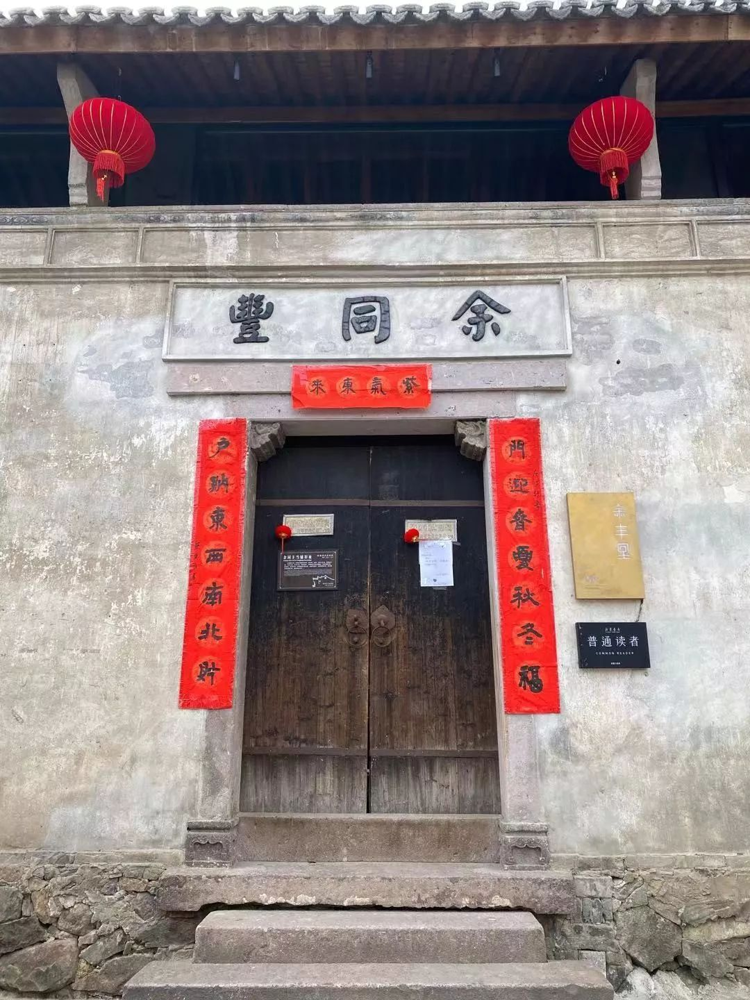
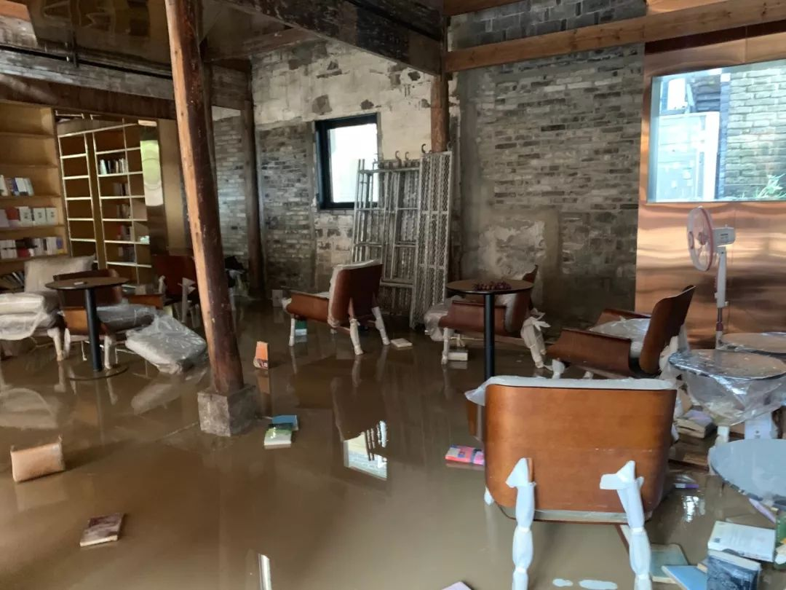
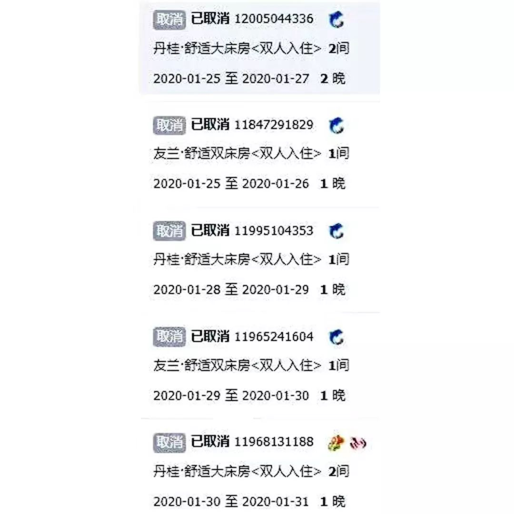
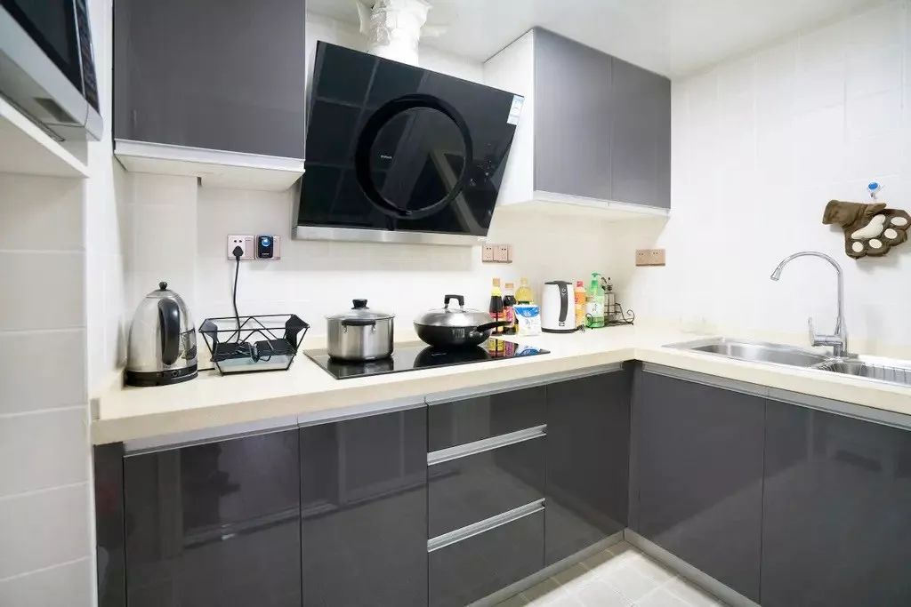
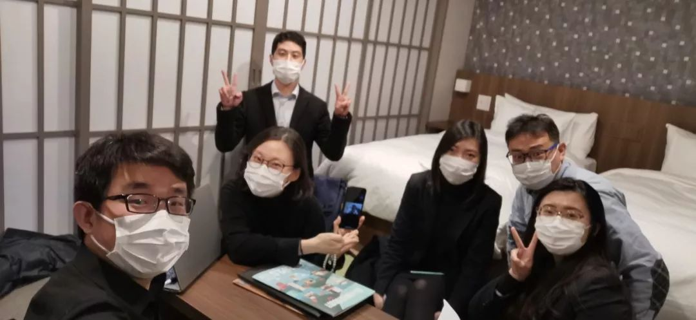
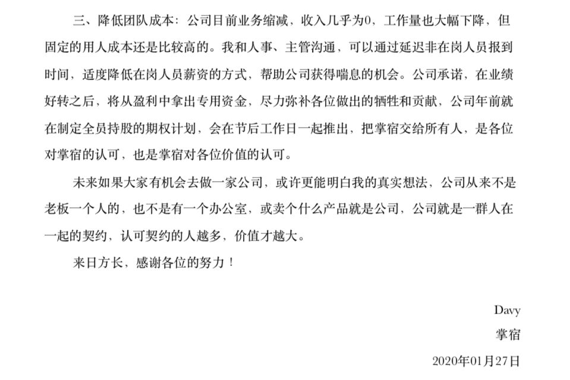
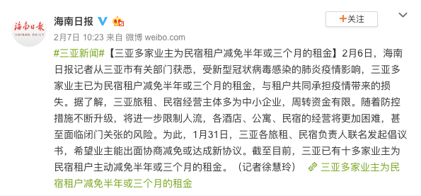

你为什么还买不到口罩
原文链接 备份链接 疫情防控“全国一盘棋”的关键时刻，各地政府应该在用工、原材料、物流等环节最大程度地给口罩企业提供支持，绝对不能画地为牢。 2月11日，工作人员在位于重庆市南岸区的宏冠医疗设备有限公司口罩生产包装车间内作业。作者：王全 …
开一家民宿曾经是很流行的创业方式，
但2020年初这场突如其来的疫情，
却将这个行业几乎彻底归零。

挂红灯笼贴春联的余丰里民宿，大门紧闭
我们采访了十多家民宿主，
他们的店分布在北京、南京、台州、杭州、厦门以及海外日本，
有人每月房租成本逼近200万，
如果再无订单，活不过一个月；
有人投资2000万的店正准备开业，
迎面赶上肺炎肆虐，只好就地解散员工。
一个业主告诉一条，
听到别的行业抱怨被腰斩都心生羡慕，
因为民宿是直接业绩挂零。

城市民宿品牌掌宿在北京三里屯等热门地段拥有多处房源，疫情之下，房租压力巨大
不能坐以待毙，民宿老板们想尽办法自救：
小业主想重回职场，用工资补贴房租，
大品牌短租改长租，和自如等租房品牌厮杀。
大家的共识是：
2020年，盈利已是奢求，
活下来，是唯一的目标。
***************编辑 ********** 闫坤沐***************
余丰里民宿俯瞰
“这个行业垮塌的一幕，我亲眼目睹了”
对民宿创业者金勰来说，这个新年本该是充满希望的：他投资的高端民宿余丰里终于要迎接第一个旺季了。
这个项目位于浙江临海台州府城文化旅游区内，由百年历史建筑“余同丰”当铺和六十年历史的老仓库建筑群改建而成。改建过程花了四年，只设计费就将近200万，最终改造成本2000万。
2019年8月，台风利奇马登陆，临海是全国受灾严重的地区，整个市被淹。尽管余丰里选址在地势高位，店里也有半米深的积水，书籍、家具、电器、供电设备都损毁严重，重新整修又花了上百万。


金勰在台风过境后一片狼藉的余丰里
春节前，余丰里终于被恢复到营业状态，小年之后，金勰和员工一起，陆续给店里挂上了喜庆的红灯笼，贴了窗花。房间在线上已经预定出八成，这意味着长假期间，三十多间客房肯定是全满的，大家都以为终于历尽波折，熬到了丰收的时候。
不对劲的信号大约从1月21日开始，那天，零星有客人希望退单。前一天晚上，钟南山院士接受央视采访，明确表示新型肺炎存在人传人的现象。好在临海毕竟和武汉有一定距离，行程受到影响的客人还是少数。

余丰里的退款订单
可惜坏消息并没有因为人们的乐观而停止。
1月23日，武汉正式封城，全国各地的人都陆续开始意识到疫情的严重性，退单请求变得越来越多。24日，携程宣布酒店类产品全部无损退款，同一天，当地政府出台文件要求景区、酒店等相关行业关门歇业。
为了积极配合这个决定，来不及思量和反应，金勰和店员主动给还没取消订单的客人打电话沟通，完成了所有退款。除夕夜，他解散了20多名员工，只留下一人和他一起在店里值班，就这样过了最难忘的一个新年。
和金勰不同，Davy经营的是一个城市艺术民宿品牌，名叫掌宿，在北京和南京运营着超过200套精装客房。


掌宿民宿的厨房提供电器、厨具、调味品
考虑到春节主要是家庭出游，对厨房的使用需求高，他们刚刚采买了大量厨房电器、厨具、餐具，还对房源做了集中修整。
掌宿的员工大多是外地人，节前，Davy一一和大家谈话，保证按照国家规定支付三倍工资，并且制定了详细的排班表，请求大家留下来。清扫的阿姨们是外包的，按工作量计费，但为了不出现用工荒，他也承诺支付给她们两倍工资。

掌宿的四位创始人
Davy的合伙人二笼事后回忆，他早在一月中旬就看到过关于发现新型冠状病毒的新闻。民宿是个靠天吃饭的行业，二笼也隐隐担心会不会影响到和武汉距离相对更近的南京，但和同行交流后，他发现大家都比较轻松，相信疫情很快会得到控制，这个春节不会有什么不同。
对掌宿来说，变化同样来得猝不及防，运营后台用清晰的数据，记录了巨变发生的全过程：
1月21日，收到50个取消订单的请求，运营部门发出异常警报。
1月22日，南京地区退订率超过40%，北京超过35%。
1月24日大年三十，将近80%的订单被取消。
1月26日，2月份几乎所有订单被取消。
1月27日，2月之后能被退订的订单全部取消……
一年里，民宿入住率的波动随季节、假期呈现周期性规律，失去了开年最大的旺季，几乎可以断定，整个2020年都不太可能有盈利，活下去就是胜利。
二笼在一篇自述文章中写道：“我从来没有想过，城市民宿行业的毁灭或者末日是什么样。很幸运，或者，很不幸。这个行业垮塌的一幕，我亲眼目睹了。”

掌宿的后台订单取消记录
还能撑多久？
比起关店，那些远离疫情中心的同行，日子也并没有更好过一点。随着大陆游客纷纷取消出游计划，波及范围变得越来越广。中国台湾垦丁的一家民宿，入住率只剩一成。纸质预订登记本上，全是被白色涂改液覆盖掉的订房记录，却没有新的笔迹填入。

Ostay民宿
海外民宿品牌Ostay在日本运营着700多间房源，中国游客占客源的四成，但进入二月以后，日本国内和整个东南亚游客的出行意愿都在降低，受此影响，他们的订单掉了一半。Ostay在泰国的200多间民宿，情况也类似，目前入住率下降了三成。

余丰里的客房内景
作为景区内的高端民宿，余丰里的客房单价在800到1600元一晚之间浮动，每关闭一天，就要损失4万左右的营业额，以此粗算，一个月损失上百万。
寒冬、腰斩这样的词已经不足以形容民宿行业的现状，“我们直接是被归零了”，金勰说。
还能撑多久？妥善处理好订单退款之后，这是每个民宿运营者问自己的第一个问题。
抗风险能力最低的，是2019年开业的新店。对他们来说，签约时的房租价格在高位，而大量资金用在前期投入上，还没有开始回流，一切储备都在低位，几乎承受不起任何波折。阳朔的一家民宿主在网上求助，据他描述，往年春节当地一房难求，他去年投资300多万开了一家店，其中有200多万是贷款和借款，现在仅仅是还贷压力已经让他不堪重负。

淇淇的“南国的孩子”民宿夜景
淇淇2018年在广西北海的涠洲岛租了一栋房子做民宿，是民宿业主中的个体户。封岛后，公共交通一度中断，她被取消了五次机票、一张高铁票，才终于得以离岛，回到成都的家里。这段时间，她甚至想过要不要重新去找个工作，用工资补贴自己的小店。
西湖边的民宿经营者告诉一条，他们的租金和杭州最高端的CBD写字楼相当，再加上竞争激烈，原本利润就很薄，2019年将将打平，半个月没有进账就已经难以为继，现在已经有些店主考虑要关店了。但更无奈的是，行业正值最低谷，前景又不明朗，连转让都没有人愿意接手，只能自己咬牙继续承担亏损。
Davy给我们算了更详细的一笔账：
他们在北京的房源，月租金平均在每套8000元左右，南京每套4000到5000元，单是租金成本，一个月就要120万到150万左右。而且年后是续租的高峰期，很多房子需要在最近付一个季度甚至半年的租金。

掌宿
除此之外，网费、办公室租赁、库房租赁、线上系统维护等等都是固定成本，几乎不会因为入住率降低而减少，每隔几天，都有新的账单被递到他手里。再算上额外高价采买的消毒用品，零零总总加起来，他们一个月至少需要200万的运营资金才能周转下去，这意味着如果掌宿什么也不做，公司支撑一个月都很困难。
比起资金上的损失，更让Davy担心的是，经此一役，从业者和消费者都会对行业失去信心，这才是比疫情更长久的打击。
年前，冲着翻倍工资，掌宿的外包团队中有8个清扫阿姨选择留在北京，但现在，她们没活干，没有收入，吃住都成问题。另一边，大多数农村都封闭了，连家也回不去，“都哭过好多次了。”Davy给她们安排了临时宿舍，又尽量找些活给她们干，比如趁着空置的时候，对重点房源做平时来不及做的深度整修和清洁，供她们维持基本生活。
Ostay的CEO郭洁琳也遇到了安抚员工的问题。疫情新闻最集中的那段时间，她在日本的一家店正好接待着来自武汉的客人，这引起了清扫人员的恐慌。直到客人用出行记录解释自己在封城前就离开了武汉，并且已经超过14天没有任何症状，才得以平息。
Ostay民宿
自救
疫情发生后，清华大学经济管理学院金融系教授朱武祥面向995家中小企业发放了问卷，其中涵盖了旅游、酒店、民宿行业，结果显示，34%的企业只能维持一个月，85%的企业最多维持三个月。
和大多数中小企业相比，民宿面临的前景则更加艰险。这一周，各个城市都明确规定了员工复工的时间点，大多在2月10日左右就可以恢复生产经营，但民宿一来不是社会刚需，二来会造成流动人口聚集，很多地区的政府通知文件上都写着：“即日起关停”、“开业时间另行通知。”

武汉“医生驿站”发起人接受央视专访
对于身处湖北等疫情严重地区的从业者来说，参与疫情救援就是自救的第一步。1月25日左右，武汉住宿业的小型从业者成立了行业联盟，统一调度，免费接待通勤受限的医务人员入住。
业主李丹没能在封城前回到武汉，但贡献出了自家民宿的门锁密码，住进她的店的是附近医院的护士，自带床单被套和消毒用品，在微信里一再和她表达感谢，表示会好好爱惜房子，离开时收拾得像没人住过一样。
然而由于不具备客房消毒能力，随着疫情的发展，这样的模式变得难以为继。1月30日，为了避免住客之间交叉感染，武汉的民宿联盟被解散。
一诺民宿和滞留长沙客人沟通入住
和湖北相邻的长沙，有不少武汉旅客滞留。一诺民宿主动在网络上发消息，拿出50间客房免费接待滞留的武汉人和医护人员，因为没法消毒，所以一间客房只能入住一次，住完封闭不再启用，等待疫情过后再统一做杀毒处理，贡献了自己停业前最后的能量。
厦门远离疫区，当地政府并没有强制民宿业主停业，只是规定不能接待外地游客，但对这个旅游热门目的地的商家来说，这依然意味着失去全部的客人。一家民宿原本正月十五之前都被订满，年前又全部被退掉，再加上每个月8万的房租、8个员工的工资，里外里损失了几十万。
老板王先生此前接待过来自湖北的旅游团，主动配合当地工作，去酒店隔离了14天。无恙返家后，他决定暂时关店止损，在朋友圈打折出售鹅绒被、欧舒丹洗护套装等物料。作为当地人，他说今年春节是他见过的厦门最冷清的样子。

谷町君员工开会商量疫情淡季对策
日本的谷町君民宿在疫情爆发后，把京都的店以极低的价格开放给滞留当地的中国旅客，一开始，这样做只是为了帮助同胞，但进入二月后，店里的退订量达到50%，降价变成了自救的方式。平时卖600到900元的民宿降到200元一间，两层的独栋由1200-3000元降为600元一天，最大折扣幅度达到二折，用CEO刘洋的话来说，“连清扫费都不够”，但他想着赚不到钱，积累一些好评也是好的。

大雪中的谷町君
意识到自己在生存边缘挣扎之后，掌宿的合伙人迅速开会，策略是把短租改为长租，租金只以成本价收取，中介费、网费、卫生费、物业费全免，以实现一部分资金回流。但北京长租市场竞争激烈，留给他们行动的时间并不多。可以预见，2月10日开工后是北京的换房高峰，自如、相寓这些成熟品牌都会在那时有所动作，决定他们生死的窗口期不过10天左右。
2月3日，掌宿通过多个渠道在网上发布求助信，标题直白，甚至有些悲壮：《民宿求援：200套网红民宿限时低价出租》。

掌宿发布的求助信
消息发出去之后，掌宿迎来的第一批意向客户，大多是同样受到疫情波及的人们。
有人返工后被租住的小区要求自行找地方隔离半个月；一个家庭原本此时应该住进新房了，但现在装修停滞，只好先租几个月房子过渡。来北京找工作的应届毕业生们意识到今年机会少，面试会是一场持久战，需要先住下来从长计议；一家公司所在的写字楼暂时被封闭，找到他们的房子当临时办公场所……特殊时期，业主和租客之间形成一种超越了简单生意往来的互助氛围。
用短租变长租的方式，掌宿大约能解决20%左右的房源。另外，他们又快速筛选出租金贵、出租率低的房源，进行退租，希望以此再解决掉两成租金成本：“有一些是违约退，付违约金，昨天我们就退掉了好几套。”
为了进一步收缩成本，Davy又和一些员工谈了停薪留职，公司继续为他们缴纳社保。他知道这不是长久之计：“毕竟一段时间没有收入的话，人家没有理由留下来”，但眼下活着就是最大的目标。


Davy给员工发内部信
等待希望
节衣缩食的日子什么时候是个头，没有人有明确的答案。金勰这段时间守着店，每天最紧要的事情是看新闻：“毕竟疫情过去了，我们才能谈其他的。”
行业上下游都发起了对于民宿从业者的补贴和救助。携程、Airbnb这些平台陆续成立了相关基金，三亚多家业主宣布为民宿减免三个月甚至半年的租金。

台州当地政府给了余丰里一定的政策优惠，金勰暂时不用为租金太发愁，如果开店后客流无法覆盖运营成本，关店等待反而是眼下最安全的选项。
即便如此，大家对未来也不敢过于乐观。郭洁琳根据非典时的数据，推测即使疫情过去，游客也会有一个月左右的观望期。
刘洋担心樱花季会泡汤，盼望着东京奥运会期间能反弹，否则这一年就全完了。好在此次疫情中，日本为中国提供了不少帮助，他判断游客对日本的好感度会增强。

谷町君日式民宿
“三个月之内肯定是没什么希望的，现在就看三到六个月有没有可能恢复。”Davy把回暖的心理预期调整到年中，希望到时候能赶上暑期这个波峰。如果还是不行，只好拿出更多房源转型长租，以获得稳定的现金流，为此每套房子每个月会损失5000元左右的收入。
开一家民宿曾经是很流行的创业方式，在很多人心目中，它代表着远离琐碎庸常的生活，追求诗和远方。金勰和Davy是典型的创业者，入行前都有媒体从业经历，金勰在电视台工作了六年，Davy还有Uber这样的互联网公司从业经历。在他们创业的2016、2017年，正是民宿高速发展的时候，但增速快的另一面是门槛不算高，它在2018年迅速饱和，2019年供大于求，Davy发现过去一年，大家整体营业额都下滑了至少10%左右。
2019年和2020年交界的时候，金勰曾经和同行调侃，2019年已经几乎不挣钱了，2020年总该反弹了吧？没想到迎来的是更毁灭性的打击。但接受一条采访的从业者们同时也都提到，即便没有这场疫情，行业也到了开始优胜劣汰的阶段，疫情只是加速了这个过程。

余丰里的读书空间
危机中蕴含着希望，经过这次波折，金勰反而确认，他和合伙人们选择高端客群，走重视设计和服务的精品路线是正确的：“高端客群，你比如资产两个亿的人，他就算缩水一半，还有一个亿，他不会轻易改变自己的消费习惯，但对工薪阶层来说，他哪怕只损失了5000，他可能就不出去玩了。”
郭洁琳也认为，修炼内功是Ostay当下最重要的事：“我们是用自己的互联网技术在做，我们有一些众包的体系，比如说我们的清扫人员都不是我们的员工，都是接单，我们线上也有自己的收益管理体系、供应链体系，提供一种规模化的民宿解决方案。”
Davy也把这段时间看成掌宿的“压力测试”。比起余丰里这种单体高投入的项目，城市民宿如何在尽可能达到标准化服务的基础上，又和同档位的酒店有所区分，做出每家店的特色，是生存的难点。为此，他和合伙人们要更加优化公司的资产管理模型：“这次危机其实也是对自己认知的一个调整和思考，对吧？调整自己的认知、调整自己的团队、调整自己的产品，谁也没想过会遇到这样的事情，那既然遇到了，就去思考一下下一次这种极端情况来临的时候，我怎么样去应对。”
无论是余丰里的以守为攻，还是掌宿的积极改变，效果究竟如何，只有等待时间去验证。


▼


原文链接 备份链接 疫情防控“全国一盘棋”的关键时刻，各地政府应该在用工、原材料、物流等环节最大程度地给口罩企业提供支持，绝对不能画地为牢。 2月11日，工作人员在位于重庆市南岸区的宏冠医疗设备有限公司口罩生产包装车间内作业。作者：王全 …
原文链接 备份链接 _ 在新冠肺炎疫情中心区域，远比平时忙碌的快递员在街头难见其他人，遇到别家公司的快递员，大家叫不上名字，但都打个招呼，在特殊的时点里惺惺相惜 _ 文 |《财经》记者 俞琴 编辑 | 鲁伟 新冠肺炎疫情在武汉蔓延后，整座 …
原文链接 备份链接 《创新经济战疫计划》，是燃财经在新型肺炎疫情期间推出的特别栏目，关注创新经济企业遇到的新难题、商讨应该采取的新对策，希望能够帮助中小企业一起战胜挑战、把握机会。本文是第7期。查看前6篇请点击《哪些行业正在逆势爆 …
原文链接 备份链接 以下文章来源于AI财经社 ，作者AI财经社作者 开工前最忧伤的段子可能是，“今天戴着口罩去买口罩，口罩没买到，还损失了一个口罩。” 2月10日起，部分企业陆续复工，宅在家里即为国家做贡献的使命宣告终结。当下的主要矛 …
原文链接 备份链接 图片来源：视觉中国 记者：马一凡 “ 突发的疫情对未来写字楼的交付标准、运营管理和新技术运用提出更高要求。 ” 整个城市拥有超过1500万平方米的高端写字楼总量，数百万白领将在高人员密度环境下办公——节后白领复工潮渐 …